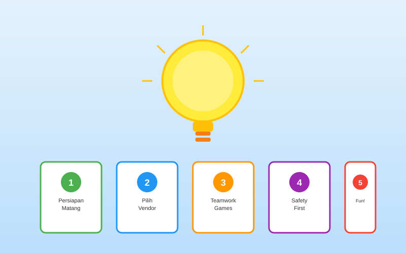
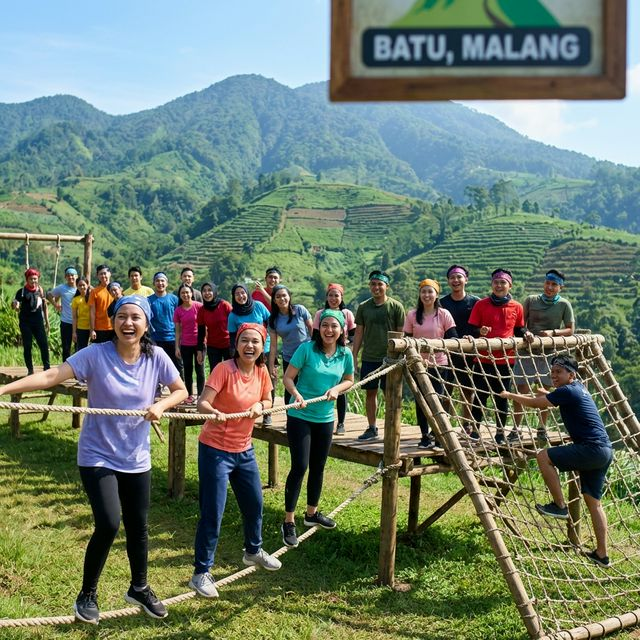
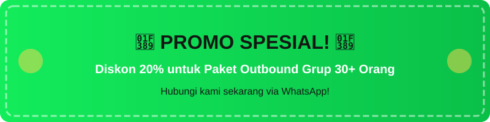

Tips Persiapan Outbound Batu Malang untuk Pemula: Panduan Lengkap Agar Siap Seru-Seruan

Ilustrasi lima poin penting yang harus dipersiapkan sebelum mengikuti kegiatan outbound pertama kali.
Mengikuti kegiatan outbound untuk pertama kalinya bisa terasa mendebarkan sekaligus membingungkan. Apa yang harus dibawa? Bagaimana persiapan fisiknya? Pakaian apa yang cocok? Jangan khawatir! Sebagai vendor outbound Batu Malang terpercaya yang telah melayani ribuan peserta pemula, Gemilang Katun menyusun panduan lengkap ini untuk memastikan pengalaman outbound pertama Anda berjalan lancar, aman, dan tentu saja seru!
Batu Malang dengan ketinggian 700-1.700 mdpl dan suhu rata-rata 15-25°C memiliki karakteristik cuaca dan medan yang perlu dipahami sebelum kegiatan. Persiapan yang matang akan membuat Anda lebih percaya diri dan bisa menikmati setiap aktivitas outbound tanpa hambatan. Mari simak panduan lengkapnya!
Persiapan Fisik Sebelum Outbound
Kondisi fisik yang prima akan sangat mempengaruhi kenyamanan dan keamanan Anda selama kegiatan outbound. Meskipun aktivitas outbound dirancang untuk semua tingkat kebugaran, persiapan fisik yang baik akan membuat pengalaman Anda jauh lebih menyenangkan.
Latihan Ringan 1-2 Minggu Sebelum Kegiatan
Mulai dengan latihan ringan secara bertahap setidaknya 1-2 minggu sebelum hari H. Tidak perlu latihan berat — cukup aktivitas sederhana yang membuat tubuh Anda terbiasa bergerak. Berikut contoh jadwal latihan yang direkomendasikan:
- Minggu pertama: Jalan kaki 30 menit setiap hari atau jogging ringan 15-20 menit 3x seminggu
- Minggu kedua: Tingkatkan durasi menjadi 45 menit jalan kaki atau jogging 25-30 menit, tambahkan stretching 10 menit setelah latihan
- 3 hari sebelum: Latihan ringan saja, fokus pada stretching dan istirahat yang cukup
- 1 hari sebelum: Rest day! Istirahat total dan tidur cukup 7-8 jam
Asupan Nutrisi dan Hidrasi yang Tepat
Nutrisi yang baik adalah bahan bakar untuk tubuh Anda selama outbound. Berikut panduan nutrisi yang direkomendasikan oleh tim kami:
Seminggu sebelum kegiatan, perbanyak konsumsi karbohidrat kompleks seperti nasi merah, oatmeal, dan roti gandum untuk menyimpan energi. Pastikan asupan protein cukup dari ayam, ikan, telur, dan tahu/tempe untuk mempersiapkan otot. Minum air putih minimal 2 liter per hari untuk menjaga hidrasi.
Pada hari H, makan sarapan bergizi 1-2 jam sebelum kegiatan dimulai. Hindari makanan berminyak, pedas, atau yang bisa menyebabkan gangguan pencernaan. Bawa camilan energi seperti granola bar, kacang-kacangan, atau buah kering untuk dikonsumsi saat istirahat.
"Peserta yang datang dengan persiapan fisik yang baik cenderung lebih menikmati kegiatan dan lebih aktif berpartisipasi. Ingat, outbound bukan tentang siapa yang paling kuat, tapi tentang bagaimana Anda menikmati prosesnya bersama tim." — Ulil, Fasilitator Outbound Gemilang Katun
Perlengkapan Wajib yang Harus Dibawa
Perlengkapan yang tepat akan membuat Anda nyaman sepanjang hari. Berikut checklist perlengkapan wajib yang harus Anda siapkan untuk outbound di Batu Malang:
Pakaian dan Alas Kaki
- Sepatu olahraga tertutup — Ini adalah item terpenting! Pilih sepatu dengan sol yang grippy dan nyaman dipakai berjalan jauh. Sepatu hiking atau running shoes sangat ideal. Hindari sandal, sepatu hak, atau sepatu baru yang belum pernah dipakai.
- Pakaian olahraga nyaman — Gunakan kaos atau dri-fit yang menyerap keringat dengan celana olahraga panjang atau ¾. Hindari jeans karena tidak fleksibel dan berat saat basah.
- Jaket atau sweater — Suhu di Batu bisa turun hingga 15°C terutama di pagi dan sore hari. Jaket windbreaker atau hoodie ringan sangat penting untuk kenyamanan.
- Baju ganti — Siapkan satu set pakaian ganti termasuk kaos dan celana. Beberapa aktivitas bisa membuat Anda basah atau berkeringat banyak.
- Topi atau buff — Melindungi dari sinar matahari langsung saat aktivitas di area terbuka.
- Kaos kaki ekstra — Kaos kaki basah bisa menyebabkan lecet. Bawa minimal 2 pasang kaos kaki tebal.
Perlengkapan Pribadi Penting
- Sunblock SPF 30+ — Wajib! Meskipun Batu terasa sejuk, paparan UV di dataran tinggi justru lebih kuat.
- Botol minum reusable — Bawa botol minum minimal 750ml. Hidrasi sangat penting selama aktivitas outdoor.
- Obat-obatan pribadi — Bawa obat rutin jika ada, plus obat umum seperti paracetamol, minyak angin, dan plester luka.
- Power bank — Pastikan HP dan power bank terisi penuh untuk dokumentasi dan komunikasi darurat.
- Hand sanitizer dan masker cadangan — Menjaga kebersihan selama kegiatan kelompok.
- Tas ransel kecil — Gunakan tas ransel (bukan tas selempang atau handbag) agar kedua tangan bebas bergerak.

Peserta outbound pemula saat briefing persiapan kegiatan di salah satu lokasi outbound Batu Malang.
Persiapan Mental dan Mindset yang Tepat
Selain fisik dan perlengkapan, persiapan mental juga sangat penting, terutama jika ini adalah pengalaman outbound pertama Anda. Beberapa peserta mungkin merasa cemas atau takut menghadapi aktivitas tertentu. Berikut tips untuk mempersiapkan mental Anda:
Datang dengan Mindset Terbuka
Outbound bukan kompetisi — ini adalah kesempatan untuk belajar, tumbuh, dan mempererat hubungan dengan rekan tim. Tidak ada yang dinilai berdasarkan kekuatan fisik atau keberanian. Setiap peserta memiliki peran penting dalam tim. Datanglah dengan pikiran terbuka dan kesiapan untuk mencoba hal baru.
Berani Keluar dari Zona Nyaman
Beberapa aktivitas outbound mungkin terasa di luar zona nyaman Anda. Mungkin Anda takut ketinggian, tidak suka kotor, atau merasa canggung berbicara di depan kelompok. Outbound justru dirancang untuk membantu Anda mengatasi ketakutan-ketakutan ini secara bertahap dan aman.
Ingat, vendor outbound profesional seperti Gemilang Katun tidak akan memaksa peserta melakukan aktivitas yang berbahaya. Semua aktivitas memiliki opsi alternatif dengan tingkat kesulitan yang berbeda. Jika merasa belum siap untuk high rope, Anda bisa memilih aktivitas di level yang lebih rendah.
Komunikasikan Kondisi Anda kepada Fasilitator
Jangan sungkan untuk memberitahu fasilitator tentang kondisi kesehatan, ketakutan, atau kekhawatiran Anda. Informasi ini akan membantu fasilitator dalam merancang pengalaman yang optimal dan aman untuk Anda. Beberapa hal yang perlu dikomunikasikan meliputi riwayat cedera atau penyakit, fobia tertentu (ketinggian, air, tempat gelap), dan tingkat kebugaran fisik saat ini.
Tips Penting di Hari H
Hari H sudah tiba! Berikut tips agar hari outbound Anda berjalan sempurna:
- Datang tepat waktu — Sebaiknya datang 15-30 menit sebelum jadwal. Keterlambatan bisa mengganggu seluruh kelompok dan memperpendek waktu kegiatan Anda.
- Ikuti briefing dengan serius — Briefing keselamatan bukan formalitas. Dengarkan dengan seksama instruksi fasilitator tentang aturan, teknik, dan prosedur darurat.
- Pemanasan sebelum aktivitas — Jangan skip pemanasan! Otot yang belum diregangkan rentan mengalami cedera. Ikuti sesi pemanasan yang dipimpin oleh fasilitator.
- Minum air secara teratur — Jangan menunggu haus. Minum sedikit-sedikit secara berkala, terutama antara aktivitas satu ke aktivitas berikutnya.
- Nikmati setiap momen — Jangan terlalu sibuk foto/video sampai lupa menikmati. Seimbangkan antara dokumentasi dan pengalaman langsung.
- Berpartisipasi aktif — Semakin aktif Anda berpartisipasi, semakin banyak manfaat yang Anda dapatkan. Berikan kontribusi terbaik untuk tim.
- Jaga kebersihan lokasi — Bawa kembali sampah Anda dan jaga kelestarian alam. Leave no trace!
Kesalahan Umum Peserta Outbound Pemula
Belajar dari pengalaman vendor outbound Batu Malang terpercaya dalam menangani ribuan peserta, berikut kesalahan umum yang sering dilakukan oleh pemula dan cara menghindarinya:
- Memakai sepatu baru — Sepatu baru yang belum break-in pasti menyebabkan lecet. Pakai sepatu yang sudah nyaman dan terbiasa.
- Tidak bawa jaket — Banyak peserta yang meremehkan suhu dingin di Batu. Akibatnya mereka kedinginan dan tidak bisa konsentrasi pada aktivitas.
- Makan terlalu kenyang sebelum aktivitas — Perut terlalu penuh membuat mual, terutama untuk aktivitas yang melibatkan gerakan dinamis atau ketinggian.
- Terlalu banyak membawa barang — Bawa secukupnya saja. Barang-barang berharga dan tidak diperlukan sebaiknya ditinggalkan di bus atau loker.
- Tidak mau bertanya — Jika tidak mengerti instruksi, bertanyalah! Lebih baik bertanya daripada melakukan sesuatu dengan salah dan berisiko cedera.
- Menyepelekan pemanasan — Otot yang kaku mudah cedera. Pemanasan 10-15 menit bisa mencegah cedera yang mengganggu seluruh kegiatan Anda.
Persiapan Khusus untuk Outbound di Batu Malang
Batu Malang memiliki karakteristik unik yang perlu diperhatikan untuk persiapan outbound:
Memahami Cuaca Batu Malang
Suhu di Batu bisa turun drastis di pagi hari (15-18°C) dan naik di siang hari (23-27°C). Siapkan pakaian berlapis (layering) agar bisa menyesuaikan dengan perubahan suhu. Jaket tipis yang bisa dilipat kecil sangat praktis untuk dibawa.
Musim hujan (November-Maret) di Batu biasanya disertai hujan deras di sore hari. Jika kegiatan dilakukan di musim ini, bawa jas hujan atau ponco yang bisa dilipat. Vendor outbound profesional biasanya sudah menyiapkan rencana cadangan untuk cuaca buruk.
Memahami Medan Lokasi
Lokasi outbound di Batu umumnya bertanah merah yang menjadi licin saat basah. Pilih sepatu dengan sol bergalur dalam (deep tread) untuk grip yang lebih baik. Beberapa lokasi memiliki medan menanjak yang cukup curam, jadi persiapkan stamina untuk berjalan menanjak.

Baca Juga
Pertanyaan yang Sering Diajukan (FAQ)
Kesimpulan
Persiapan yang matang adalah kunci pengalaman outbound yang menyenangkan dan berkesan. Dengan memperhatikan persiapan fisik, perlengkapan yang tepat, dan mindset yang benar, outbound pertama Anda di Batu Malang pasti akan menjadi pengalaman tak terlupakan.
Sebagai vendor outbound Batu Malang terpercaya, Gemilang Katun selalu memberikan briefing persiapan lengkap kepada setiap klien sebelum hari H. Kami juga menyediakan checklist perlengkapan yang bisa diunduh dan dibagikan kepada seluruh peserta. Jangan ragu menghubungi kami untuk konsultasi dan booking!